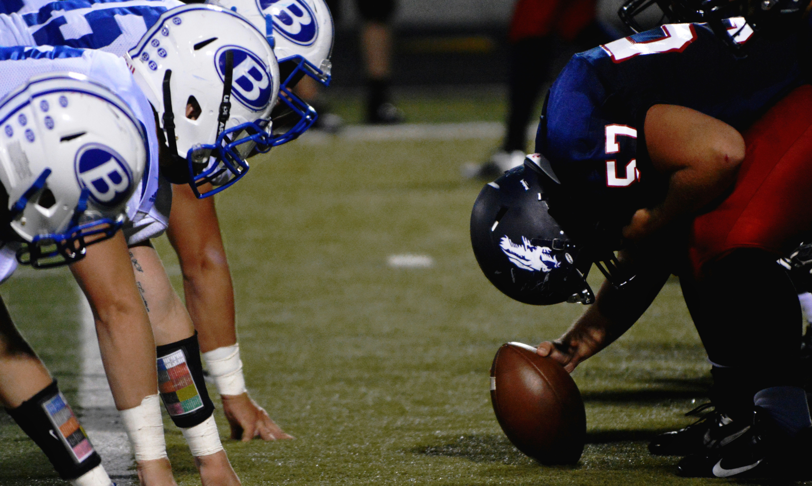

The Importance of Team Sports: Building Community and Excellence
Sports have always played an integral role in bringing people together, fostering teamwork, and teaching valuable life skills. Whether it's football, basketball, or soccer, team sports are about more than just winning—they are about building camaraderie and developing individual and collective discipline.
In modern sports, teams of all levels face challenges both on and off the field. The teamwork required to succeed in these sports teaches athletes how to work together toward a common goal, overcome obstacles, and strive for excellence. It’s not just the physical abilities that matter; mental resilience and team cohesion are just as crucial.
Whether it's the local community league or the world stage, team sports continue to inspire millions, creating not only great athletes but also fostering a sense of belonging and pride within communities.